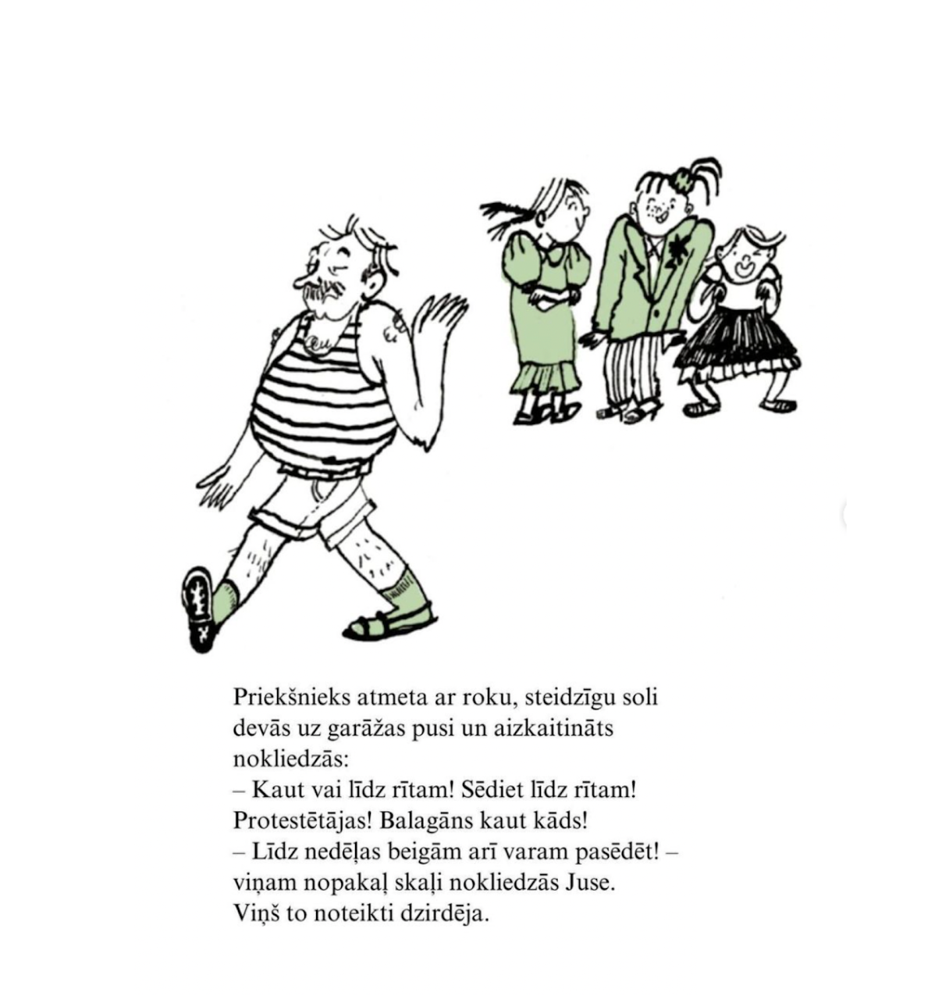
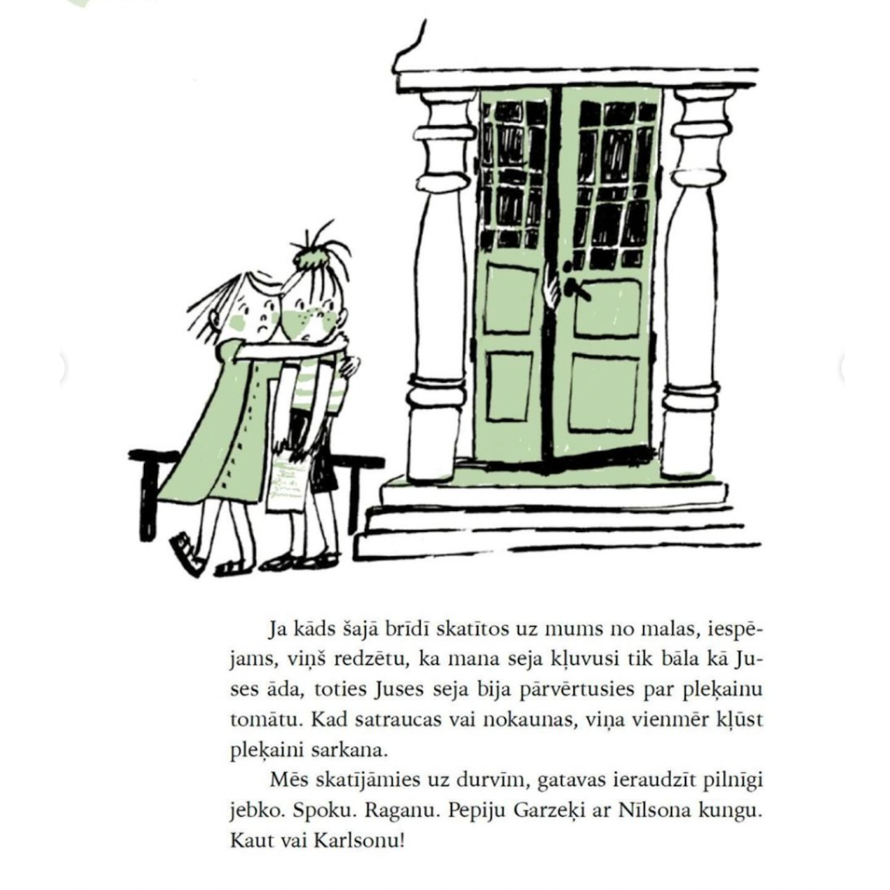

Children’s literature
Draugi un kaimiņi

“Draugi un kaimiņi” is a mischievous coming-of-age story set in a small Latvian town in the early 1990s. Two best friends, girls aged ten or eleven, love spending their free time in a corner of a meadow beneath a great willow tree, a place they call the Jungle. It is both an exciting playground and a refuge when life at home becomes unbearable. The town authorities plan to build a factory on the site. The Jungle must be saved! Their rescue mission does not go quite as planned, but along the way the friends get to know their colourful neighbours and learn much more about themselves.
Aleksandra Runde’s illustrations, with their playful lines, two-colour palette and expressive characters, vividly complement a story that captures the atmosphere of the early 1990s.
The book is available fromJānis Roze bookshops.
Awards and nominations
Latvian Literature Award 2025: best original children’s book in Latvian
LSM.lv readers’ choice award 2025
Nomination for the International Jānis Baltvilks Prize in Children’s Literature and Book Art 2025
Selected for the Children’s, Young Adults’ and Parents’ Jury collection 2025 (age 9+)


Illustrations: Aleksandra Runde